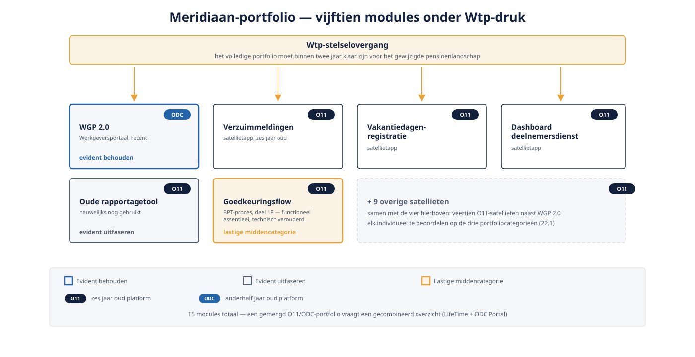

Deel 22 — Van applicatie naar portfolio: governance en hergebruikbeleid
Slidedeck · Ductus-cursus OutSystems · Niveau 3 — Expert · deel 22 van 30 · 14 slides
Slide 1 — Title: OutSystems: Leidend
OutSystems: Leidend
Deel 22 — Van applicatie naar portfolio: governance en hergebruikbeleid
Slide 2 — Section: Casus niveau 3: het portfoliobesluit
Casus niveau 3: het portfoliobesluit
Slide 3 — Bullets: Achttien maanden later
Achttien maanden later
- WGP 2.0 stabiel, naast resterende O11-satellieten
- Wtp-stelselovergang: heel het portfolio binnen twee jaar klaar
- Niet meer: één app, of één landschap — het hele portfolio

Slide 4 — Statement: Niet meer: hoort dit in de Core-laag.
Niet meer: hoort dit in de Core-laag.
Nu: verdient dit nog investering?
Slide 5 — Section: Drie categorieën
Drie categorieën
Slide 6 — Table: Portfoliocategorieën
Portfoliocategorieën
| Categorie | Voorbeeld |
|---|---|
| Evident behouden | WGP 2.0 — recent, strategisch |
| Evident uitfaseren | Oude rapportagetool, nauwelijks gebruikt |
| Lastige middencategorie | Functioneel essentieel, technisch verouderd |
Slide 7 — Opdracht: Opdracht 22.1 — Welke categorie?
Opdracht 22.1 — Welke categorie?
Drie modules uit het Meridiaan-portfolio.
→ Werkboek 22.1
Slide 8 — Section: Hergebruikbeleid en governance
Hergebruikbeleid en governance
Slide 9 — Bullets: Voordat je bouwt: kijk eerst of het al bestaat
Voordat je bouwt: kijk eerst of het al bestaat
- Voorkomt ongecontroleerde portfoliogroei
- Architecture Board: mandaat om te beslissen
- Tech lead bereidt voor, board beslist
Slide 10 — Opdracht: Baan A / Baan B
Baan A / Baan B
A — Portfolio-inventarisatie via LifeTime
B — Portfolio-inventarisatie via de ODC Portal
→ Werkboek, eigen baan
Slide 11 — Statement: Geen platform geeft je automatisch
Geen platform geeft je automatisch
het volledige portfolio-overzicht.
Slide 12 — Opdracht: Reflectieopdracht 22.2
Reflectieopdracht 22.2
Waarom niet bij individuele teams laten liggen?
→ Werkboek 22.2
Slide 13 — Bullets: Kernpunten deel 22
Kernpunten deel 22
- Portfoliogovernance: hoger abstractieniveau dan landschapsarchitectuur
- Hergebruikbeleid voorkomt ongecontroleerde groei
- Tech lead bereidt voor, Architecture Board beslist
- Gemengd O11/ODC-portfolio: gecombineerd overzicht is zelf werk
Slide 14 — Section: Volgende deel: Migratie O11 → ODC (2 dagdelen)
Volgende deel: Migratie O11 → ODC (2 dagdelen)